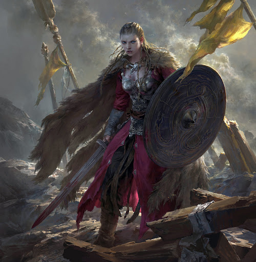
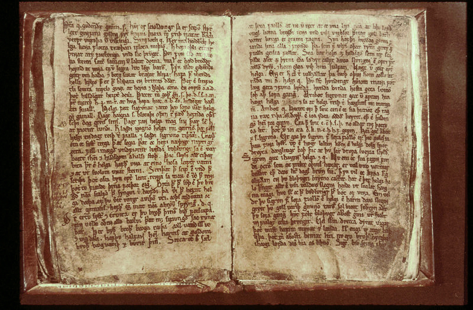

Валькирии
Вальки́рия (др.-исл. valkyrja — «выбирающая убитых») в скандинавской мифологии — дочь славного воина, или конунга, которая реет на крылатом коне над полем битвы и решает, кому из воинов, павших в бою, попасть в небесный чертог — Вальхаллу. С гривы её коня (облака) капает оплодотворяющая роса, а от её копья исходит свет.
Девы-воительницы изображаются в доспехах, шлемах с крыльями[1], со щитами и копьями. От блеска их доспехов, согласно поверьям, на небе возникает северное сияние. Миссия валькирий — сопровождать погибших героев в Вальхаллу. Кроме того, в Вальхалле валькирии прислуживают воинам за столом, разнося им мёд[2]. Иногда им даруется право решать исход битвы, а иногда они лишь выполняют веления Одина. В мифах валькирии предстают дочерьми Одина. В героических песнях «Старшей Эдды» валькирии приобретают черты женщин-богатырей. Они фигурируют в качестве возлюбленных героев Хельга и Велунда. Валькирию Сигрдриву, в последующей традиции отождествлённую с Брюнхильд, Один наказывает и погружает в сон (она больше не будет участвовать в битвах и выйдет замуж) за то, что она его ослушалась и в поединке между конунгами дала победу не Хьяльм-Гуннару (которому Один обещал победу), а Агнару; её пробуждает великий герой Зигфрид («Старшая Эдда», «Речи Сигрдривы»). Валькирий, по различным источникам, насчитывается либо девять, либо тринадцать.
